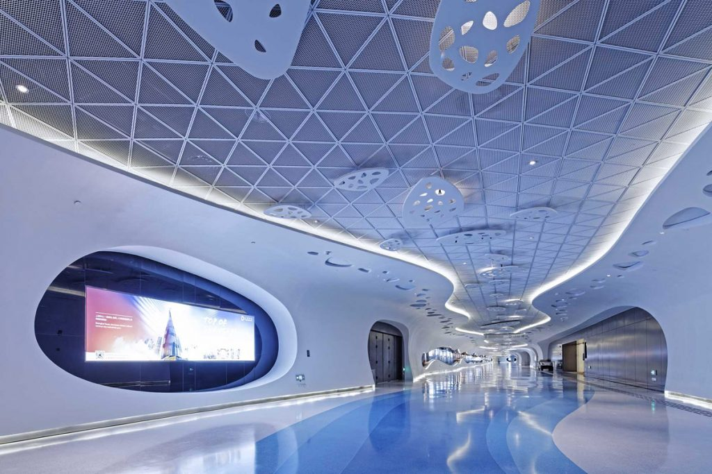

Shanghai Tower - Trzeci najwyższy budynek świata
 Shanghai Tower to trzeci najwyższy budynek na świecie, mierzący 632 metry i posiadający 128 pięter. Znajduje się w centrum finansowym Szanghaju, Chiny.
Shanghai Tower to trzeci najwyższy budynek na świecie, mierzący 632 metry i posiadający 128 pięter. Znajduje się w centrum finansowym Szanghaju, Chiny.
Konstrukcja jest znana z nowatorskiego designu, który obejmuje spiralną fasadę, co ma na celu zminimalizowanie oddziaływania wiatrów na tak wysoką budowlę.
Dane techniczne:
| Wysokość | Piętra | Rok ukończenia |
|---|---|---|
| 632 m | 128 | 2015 |
Galeria
